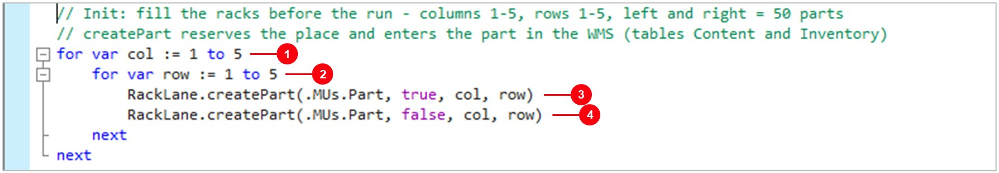
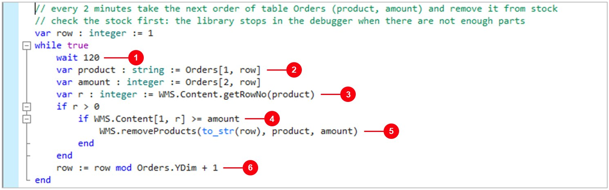

2.3 ป้อนข้อมูลสินค้าเข้า – ออก, Method และการแสดงข้อมูลสินค้าคงคลัง
2. สินค้าคงคลังและแบบจำลองเสมือนจริงด้วย Plant Simulation · ภาคปฏิบัติ
วัตถุประสงค์การเรียนรู้
- ป้อนข้อมูลสินค้าออกด้วยรอบการนำออกของ WMS และข้อมูลสินค้าเข้าหลายชนิดด้วย Source ได้
- เลือกกลยุทธ์จัดเก็บ (One by one, Random, XYZ ranges, Predefined racks) และเทียบผลอย่างยุติธรรมได้
- ใช้ Method เติมสต็อกตั้งต้น (Init) นำของออกตามคำสั่งซื้อ (OrderControl) และเก็บสถิติเมื่อรันจบ (EndSim) ได้
- อ่านข้อมูลสินค้าคงคลังจาก WMS (ช่องว่าง / มีของ, Rack Space Utilization) และสถิติของ RSU ได้
ต่อจากคลังอัตโนมัติในบท 2.2 — บทนี้ใช้คลังเดิม (Library HBW) แล้วเพิ่มทีละเรื่อง: ข้อมูลสินค้าออก (รอบการนำออก) · ข้อมูลสินค้าเข้า (สินค้า 2 ชนิด) · กลยุทธ์จัดเก็บ · Method (สต็อกตั้งต้น และนำออกตามคำสั่งซื้อ) · สถิติ
HBW_Lesson.spp Frame H05–H12
(1 Frame ต่อ 1 หัวข้อ) · ทุกตัวเลขในบทนี้มาจากการรัน 8 ชั่วโมงภาพรวม: 8 แบบฝึก
| ส่วน | Frame | เรื่อง | ผลหลัก (8 ชม.) |
|---|---|---|---|
| ข้อมูลสินค้าออก | H05 | รอบการนำออก | นำออกทุก 10 วินาที เข้าคลัง 2,263 ชิ้น |
| ข้อมูลสินค้าเข้า | H06 | สินค้า 2 ชนิด เก็บแบบ Random | เข้า 972 ใช้ 96 ช่อง |
| กลยุทธ์จัดเก็บ | H07 | แบ่งโซนคอลัมน์ (XYZ ranges) | เข้า 873 ใช้ 66 ช่อง |
| H08 | แยกชั้นตามสินค้า (Predefined racks) | เข้า 1,152 ใช้ 155 / 200 ช่อง | |
| H09 | เทียบกลยุทธ์ให้ยุติธรรม | XYZ เข้าน้อยกว่า One by one 11 % | |
| Method | H10 | เติมของก่อนรัน (Init) | มีของ 50 ช่องตั้งแต่เริ่ม |
| H11 | นำออกตามคำสั่งซื้อ (OrderControl) | นำออก 693 ชิ้น | |
| สถิติ | H12 | RSU เสีย และเก็บสถิติลงตาราง (EndSim) | เข้าคลังน้อยลง 10 % |
1. ข้อมูลสินค้าออก — H05 รอบการนำออก
Frame H05_StockRemoval = H01 ที่นำออกทุก 10 วินาที (เดิม 20) ค่าอื่นเหมือนเดิม · Source ปล่อยชิ้นงานทุก 10 วินาที
— ถ้านำออกทุก 10 วินาทีเท่ากัน ของเข้าและออกจะเกือบเท่ากัน
1.1 ตั้ง Interval between removing = 10
- 1WMS แท็บ Stock Removal: Interval between removing 20 → 10 วินาที (Removing starts after 5:00 และ Maximum Stock Removed 1 เหมือนเดิม)
WMS.RemoveInterval := 10 · Interval คือเวลาระหว่างการนำออกแต่ละครั้ง หน่วยวินาที1.2 รัน 8 ชั่วโมง ของในคลังเหลือน้อย
- 1ตอนจบมีของแค่ 9 ช่อง (H01: 32)
- 2ยังมีชิ้นงานต่อคิวบนสายพาน
- 3RSU Waiting 0.19 % เท่า H01 แต่ย้ายของได้มากขึ้น
1.3 เทียบรอบการนำออก (8 ชม.)
| นำออกทุก | เข้าคลัง | ออก Drain | ช่องที่มีของ |
|---|---|---|---|
| 10 วินาที (H05) | 2,263 | 2,249 | 9 / 100 |
| 20 วินาที (H01) | 1,461 | 1,425 | 32 / 100 |
| 30 วินาที | 1,055 | 950 | 100 / 100 (เต็ม) |
| 60 วินาที | 580 | 475 | 100 / 100 (เต็ม) |
ของออก Drain ≈ (8 ชม. − 5 นาที) ÷ Interval เมื่อในคลังมีของพอ
| ถ้า | ผล |
|---|---|
| นำออกเร็วเท่ากับของเข้า (10 วินาที) | คลังเกือบว่าง ของไหลผ่าน |
| นำออกช้ากว่าของเข้า (30–60 วินาที) | คลังเต็ม ของเข้าลดลงตามของออก |
| ระหว่างกลาง (20 วินาที) | คลังมีของบางส่วน |
2. ข้อมูลสินค้าเข้า — H06 สินค้า 2 ชนิด เก็บแบบ Random
Frame H06_Random: สินค้า 2 ชนิด PartA และ PartB เข้าคลังสลับกัน WMS เลือกช่องเก็บแบบสุ่ม
2.1 Source ปล่อย PartA และ PartB สลับกัน
- 1Interval 0 — ปล่อยต่อเนื่อง เร็วเท่าที่สายพานรับ
- 2MU Selection = Sequence Cyclical — วนตามลำดับในตาราง
- 3Table = DataTable — PartA 1 ชิ้น, PartB 1 ชิ้น
2.2 WMS เก็บแบบ Random
- 1Storing strategy = Random — สุ่มช่องว่าง
- 2เริ่มนำออกหลัง 20 นาที
- 3นำออกทุก 5 นาที
- 4ครั้งละไม่เกิน 20 ชิ้น
2.3 รัน 8 ชั่วโมง สินค้าปนกันทั้งชั้น
- 1PartA และ PartB (2 สี) ปนกันทั่วชั้น
- 2ชิ้นงานต่อคิวบนสายพาน
- 3Rack Space Utilization 96 %
| ค่าที่อ่าน | ผล | ความหมาย |
|---|---|---|
| ชิ้นงานเข้าคลัง | 972 | Source ปล่อยได้เท่าที่ RSU เก็บทัน |
| ชิ้นงานออก Drain | 874 | นำออกครั้งละ 20 ทุก 5 นาที |
| ช่องที่มีของตอนจบ | 96 / 100 | เกือบเต็ม |
| RSU Waiting | 17 % | RSU มีเวลาว่าง |
3. กลยุทธ์จัดเก็บ — H07 · H08 · H09
3.1 H07 แบ่งโซนคอลัมน์ (XYZ ranges)
Frame H07_XYZ = H06 ที่เปลี่ยนกลยุทธ์เป็น XYZ ranges และกรอกตาราง Product Ranges
- 1Storing strategy = XYZ ranges
- 2คลิกปุ่ม Product Ranges (ใช้ได้เมื่อเลือก XYZ)
- 3PartA ใน Racklane คอลัมน์ 1 ถึง 5
- 4PartB ใน Racklane คอลัมน์ 6 ถึง 10
- คอลัมน์ 1–5 (ฝั่งสายพาน): PartA อย่างเดียว (1)
- คอลัมน์ 6–10: PartB อย่างเดียว (2)
เทียบกับ Random (H06): เข้าคลัง 972 → 873 (−10 %) · ออก 874 → 805 · ช่องที่มีของ 96 → 66
3.2 H08 แยกชั้นตามสินค้า (Predefined racks)
Frame H08_PredefinedRacks: RackLane 2 ชุดรวม 200 ช่อง กำหนดให้ PartA ไป RackLane และ PartB ไป RackLane2
- 1Source
- 2Source2 — ปล่อย PartA / PartB เข้าสายพานเดียวกัน
- 3RackLane 100 ช่อง
- 4RackLane2 100 ช่อง
- 5Drain
- 6WMS — ตัวเดียวคุมทั้งคู่
- 1Storing strategy = Predefined racks
- 2คลิกปุ่ม Predefined Racks
- 3PartA → Racklane
- 4PartB → Racklane2
- RackLane: PartA อย่างเดียว (1)
- RackLane2: PartB อย่างเดียว (2)
- เข้า 1,152 (576 + 576) ออก 994 ใช้ 155 / 200 ช่อง
RSU 2 คันทำงานพร้อมกัน ของเข้ามากกว่า H06 (972)
3.3 H09 เทียบกลยุทธ์ให้ยุติธรรม
Frame H09_CompareStrategies = H06 ที่กรอก Product Ranges ไว้แล้ว บันทึกไว้ที่ One by one — ใช้ชิ้นงานและการนำออกชุดเดียวกัน
เปลี่ยนแค่ช่อง Storing strategy
- 1WMS แท็บ Strategy เปิดช่อง Storing strategy
- 2เลือก One by one / Random / XYZ ranges ทีละแบบ แล้วคลิก OK รัน 8 ชม. จดผล
| กลยุทธ์ | เข้าคลัง | ออก Drain | ช่องที่มีของ | RSU ว่าง (Waiting) |
|---|---|---|---|---|
| One by one — เก็บเรียงช่อง | 977 | 879 | 96 | 18 % |
| Random — สุ่มช่องว่าง | 972 | 874 | 96 | 17 % |
| XYZ ranges — PartA 1–5, PartB 6–10 | 873 (−11 %) | 805 | 66 | 31 % |
| ข้อสังเกต | เหตุผล |
|---|---|
| One by one กับ Random ได้ผลใกล้กัน | ใช้ทุกช่องได้ทั้ง 2 ชนิด |
| XYZ ranges เข้าคลังน้อยที่สุด | โซนของชนิดหนึ่งเต็มก่อน อีกชนิดต้องรอ |
| XYZ ranges RSU ว่างมากที่สุด (31 %) | RSU รอชิ้นงานที่เข้าโซนได้ |
WMS.StrategyIndex 1 = One by one · 2 = Random · 3 = Predefined · 4 = XYZ4. Method — H10 สต็อกตั้งต้น · H11 นำออกตามคำสั่งซื้อ
4.1 H10 เติมของในคลังก่อนเริ่มรัน (Method Init)
Frame H10_InitialStock = H01 + Method Init — คลังจริงไม่ได้เริ่มจากว่าง Method ที่ชื่อ Init
ถูกเรียกเองตอนเริ่มรัน (Method อยู่ใน Toolbox แท็บ Information Flow)

- 1คอลัมน์ 1 ถึง 5
- 2ชั้น 1 ถึง 5
- 3
RackLane.createPart(.MUs.Part, true, col, row)— ชั้นด้านซ้าย - 4
false= ชั้นด้านขวา — รวม 5 × 5 × 2 = 50 ชิ้น
- 1ของ 50 ช่อง คอลัมน์ 1–5 (ฝั่งสายพาน)
- 2เวลา 1 วินาที: WMS ช่องว่าง 50 / มีของ 50 (
WMS.NumFreePlaces/NumOccupiedPlaces)
| ค่า (8 ชม.) | H01 เริ่มว่าง | H10 เริ่ม 50 ชิ้น |
|---|---|---|
| ชิ้นงานเข้าคลังจาก Source | 1,461 | 1,411 (−50) |
| ชิ้นงานออก Drain | 1,425 | 1,425 |
| ช่องที่มีของตอนจบ | 32 | 32 |
ของออกเท่าเดิม แต่ Source ส่งเข้าน้อยลง 50 ชิ้น เท่ากับของที่เติมไว้ — ใช้สต็อกตั้งต้นเมื่ออยากให้ช่วงแรกของการรันเหมือนคลังจริง
4.2 H11 นำของออกตามคำสั่งซื้อ (ตาราง Orders + Method OrderControl)
Frame H11_OrderRemoval = H06 (PartA / PartB) ที่ปิดการนำออกอัตโนมัติ + ตาราง Orders + Method Init
และ OrderControl — รวมเรื่องปิดการนำออก (H04), สินค้า 2 ชนิด (H06) และ Method Init (H10)
- 1WMS แท็บ Stock Removal: คลิกช่อง Automatic stock removal ให้เครื่องหมายถูกหายไป ☐
- 2ตาราง Orders คอลัมน์ 1: ชื่อสินค้า (string)
- 3คอลัมน์ 2: จำนวน (integer) — 4 แถว: PartA 3, PartB 5, PartA 2, PartB 4 แล้ววนซ้ำ

- 1
wait 120— ทุก 2 นาที - 2อ่านแถวถัดไปของ
Orders - 3หาแถวสินค้าใน
WMS.Content - 4เช็กว่าสต็อกพอ
- 5
WMS.removeProductsนำออก - 6วนกลับแถวแรก
Init ใน Frame นี้มีบรรทัดเดียว &OrderControl.methCall(0)
เริ่ม OrderControl เป็นงานแยก · คลิกที่ภาพเพื่อดูโค้ดขนาดเต็ม| ค่าที่อ่าน (8 ชม.) | ผล | ความหมาย |
|---|---|---|
| ชิ้นงานเข้าคลัง | 796 | |
| นำออกตามคำสั่งซื้อ | 693 | เฉลี่ย 3.5 ชิ้น ทุก 2 นาที |
| ช่องที่มีของตอนจบ | 100 / 100 | คลังเต็ม ของเข้ามากกว่าคำสั่งซื้อ |
ถ้าทุกคำสั่งนำออกได้ จะได้ 840 ชิ้น (240 คำสั่ง × 3.5) ที่เหลือคือรอบที่สต็อกไม่พอ โค้ดจึงข้ามไป
| ข้อควรระวังกับ WMS.removeProducts | สิ่งที่พบ |
|---|---|
| OrderNo | ต้องเป็น string (คู่มือเขียน integer ซึ่งผิด) ใช้ to_str(row) |
| สต็อกไม่พอ | Library เปิด Debugger ค้าง ต้องเช็ก WMS.Content ก่อนเรียกเสมอ |
| WMS.Content | [0, row] = ชื่อสินค้า, [1, row] = จำนวน |
5. สถิติ — H12 RSU เสีย และเก็บสถิติลงตาราง
Frame H12_FailuresStats = H01 + RSU เสีย + ตาราง RSUStats + Method EndSim
— การเสียเป็นแบบสุ่มแต่ใช้ seed เดิมทุกครั้ง รันซ้ำจึงได้ตัวเลขเดิม
- 1RackLane แท็บ Rack Serving Unit: Availability 80 — สัดส่วนเวลาที่ RSU พร้อมทำงาน
- 2MTTR 300 วินาที (5 นาที) — เวลาซ่อมเฉลี่ย
RackLane.RSU_Availability := 80 · RackLane.RSU_MTTR := 300- 1
RackLane.statistic(RSUStats)— คัดลอกสถิติ RSU ลงตาราง - 2หลังรัน: Failed 20.1 %
- 3แถวแรกมีป้าย State = Drive home (ชื่อสถานะใน Library ไม่ตรง)
EndSim ถูกเรียกเองเมื่อรันถึงเวลา End ของ EventController- 1H01: Failed 0 %
- 2H12: Failed 20.14 % ตรงกับ Availability 80 % — Waiting ยังเป็น 0.19 % เท่า H01 RSU ยังเป็นคอขวด
| ค่า (8 ชม.) | H01 ไม่มีเสีย | H12 มีเสีย |
|---|---|---|
| ชิ้นงานเข้าคลัง | 1,461 | 1,313 (−10 %) |
| ชิ้นงานออก Drain | 1,425 | 1,288 |
| RSU Failed | 0 % | 20.1 % |
RSU เป็นคอขวดอยู่แล้ว เวลาที่เสียจึงลดของเข้าคลังโดยตรง
ปัญหาที่พบบ่อย และวิธีแก้
| อาการ | วิธีแก้ |
|---|---|
| ช่อง Interval เป็นสีเทา แก้ไม่ได้ | คลิกช่อง Automatic stock removal ให้ขึ้น ☑ ก่อน (H05) |
| ของไม่ออกในช่วงแรก | ดูค่า Removing starts after (H05 = 5:00, H06–H09 = 20:00) |
| ได้ชิ้นงานชนิดเดียว | Source: MU Selection = Sequence Cyclical และตารางมี 2 แถว (H06) |
| ปุ่ม Product Ranges / Predefined Racks เป็นสีเทา | เลือก Storing strategy = XYZ ranges / Predefined racks ก่อน (H07, H08) |
| RackLane2 ไม่มีของเข้า | RackLane2 แท็บ Racks: ใส่ชื่อ WMS (H08) |
| ชั้นว่างตอนเริ่มรัน | Method ต้องชื่อ Init และอยู่ใน Frame เดียวกัน แล้วกด Reset (H10) |
| รันแล้วเปิด Debugger ค้าง | เช็กสต็อกด้วย WMS.Content ก่อนเรียก removeProducts (H11) |
| ไม่มีของออก Drain เลย | ตรวจว่า Init เรียก OrderControl (H11) |
| ตาราง RSUStats ว่าง | รันให้ถึง End ของ EventController (8 ชม.) (H12) |
| รันซ้ำได้ตัวเลขเดิม | seed สุ่มเดิม — ใช้ ExperimentManager รันหลาย replication (บท 3.2) |